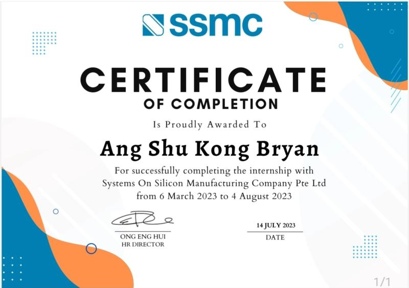
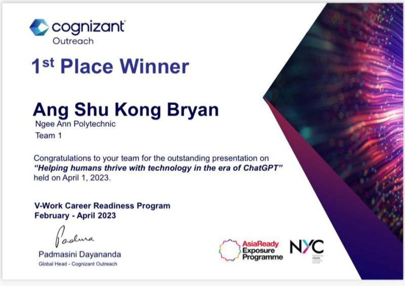
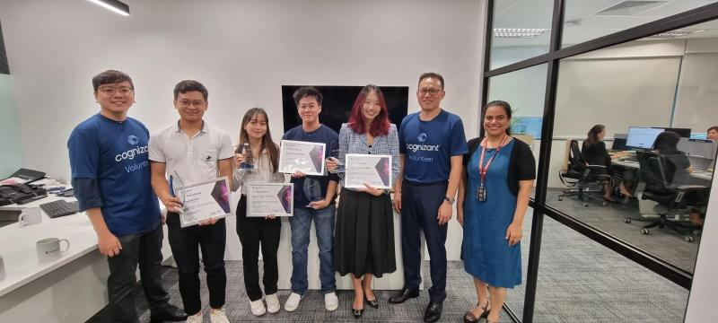

My strong interest in finance and economics helped to translate my research to identify equities which has the potential for growth and add them to my portfolio.
This has allowed me to create an investment strategy to help generate a return of about 36.6% YTD and as of Aug of 2023.

- Assisted in supervising on-site work in Chiller, HVAC, Cooling tower, Scrubber and Fire systems by Managing and co-ordinating with contractors and other system owners foron-site work.
- Evaluate and Analyse data for system Out of Spec and troubleshooting of root cause for OOS to help to achieve target system performance.
- Ensure that necessary works are carried out on time and that Standard procedure and safety protocols are met

Designed an app based on the Klaytn blockchain ecosystem that would use NFTs to
encourage Singaporeans to take part in the decentralized creator economy.
Our app was designed to be used to verify collectibles and luxury products by binding it with NFTs through the use of real-life systems and digital systems. Our team did not proceed with the competition as we had little time to focus on it.
Co-ordinated with people from different backgrounds and created a solution for how we
can help humans thrive in the era of ai through a 3-pronged approach from the individual
level to the governmental level while providing insights as to how cognizant and its
partners can also act upon.


Connected customers to street cobblers by offering a doorstep delivery service and a wide range of other services for 3 months. Identified ways to increase margins and sales through cutting of costs and marketing. Increased margins by 4x to about 60% on average.With net profit of about SG$2000/mth.
Designed an overhead standing device for the elderly to exercise in by using design thinking process. Collaborated with groupmates to design and create 3D models for the design which greatly improved my communication skills and understanding of the 3D modelling process
Communicated with groupmates of different backgrounds to design a simple phone packing system utilizing 3D modelling software.
I was in charge of designing the mechanism for loading the phone into the packaging.
Which required me to find online resources to find parts tailored to our specifications which are used in the industry such as from FESTO and also needed to communicate with my team closely to ensure that our measurements are correct and that each of our system can harmonize